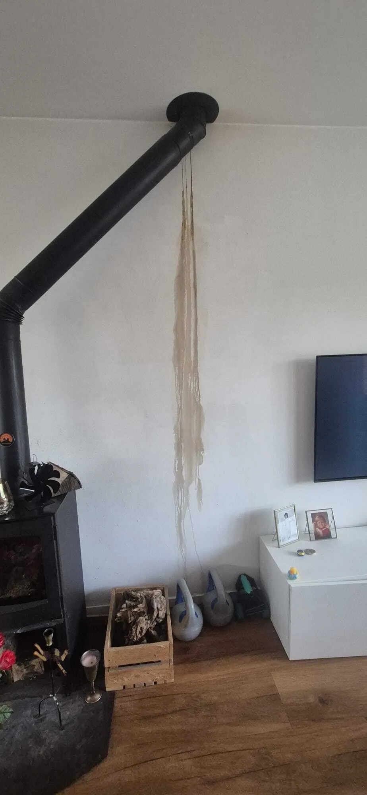
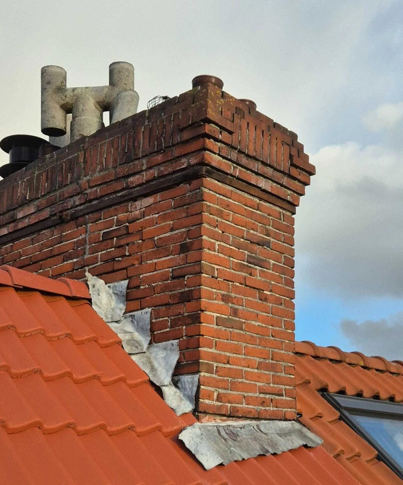
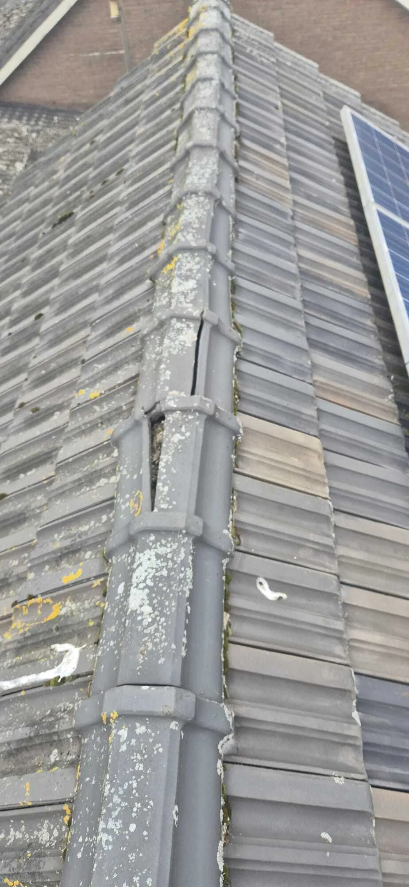

Lekkages
Van kleine vochtplekken tot acute daklekkages: wij lossen het snel en vakkundig op. Deze pagina helpt u snel naar de juiste oplossing — of u nu al precies weet waar het probleem zit, of juist eerst zekerheid wilt over de oorzaak. Met een gratis dakinspectie krijgt u helderheid, voorkomt u vervolgschade en weet u direct welke vervolgstap logisch is. Liever meteen schakelen? Bel of app ons, dan kunnen we snel inschatten wat er nodig is en voorkomt u dat een kleine lekkage doorslaat naar grotere schade.

Tip: Weet u niet precies waar de lekkage vandaan komt? Start met Lekkage opsporen of plan een gratis dakinspectie — zo voorkomt u vervolgschade.
Wat ziet u binnen? Kies het symptoom dat u herkent
Geen lange zoektocht: dit zijn de meest voorkomende situaties en de snelste route naar de juiste oplossing.
Start hieronder: klik op het symptoom dat het meest lijkt op uw situatie. Zo ziet u direct welke route het beste past.
Vochtplek na regen
Vaak een dakpan, aansluiting of dakrand. De zichtplek is niet altijd de bron.
Strepen/vocht rond schoorsteen
Meestal lood, voegwerk of schoorsteenkap. Verergert vaak bij wind/regen.
Nat bij nok / zolder
Regelmatig door nokvorsten of slijtage bij de noklijn. Vroeg ingrijpen helpt.
Alleen bij harde wind
Inwaaiwater via kleine openingen of onder pannen. De oorzaak is vaak subtiel.
Drupsporen bij dakkapel
Vaak de aansluiting/loodslab of kitrand. Goed herstellen voorkomt herhaling.
Actief water naar binnen
Dan is schade beperken stap 1. Daarna pakken we de echte oorzaak gericht aan.
Meest voorkomende oorzaken van daklekkage
Dit zijn de plekken waar lekkages het vaakst ontstaan. Herkent u er één? Klik door.
Nok (nokvorsten/mortel)
Schuiven, scheuren of slijtage rond de noklijn zorgt vaak voor vocht op zolder.
Schoorsteen (lood/voegen/kap)
Een klassieker: water vindt de weg via loodslabben of verouderd voegwerk.
Dakpannen (gebroken/verschoven)
Een kleine verschuiving kan al genoeg zijn, zeker bij wind en slagregen.
Doorvoeren (ventilatie/afvoer)
Rubbers en aansluitingen verouderen. Opsporen voorkomt “repareren op gevoel”.
Dakrand & aansluitingen
Overgangen zijn kwetsbaar: randafwerking, lood, trim of aansluitnaden.
Twijfel over de oorzaak?
Dan is de snelste route: inspectie of opsporing. Zo voorkomt u extra kosten.

Schoorsteenlekkage door uitgezakt lood. Dit is een veelvoorkomende oorzaak van vocht rond de schoorsteen en sluit direct aan op problemen met loodslabben en aansluitingen.

Noklekkage door gebroken nokvorsten. Dit soort schade zorgt vaak voor vocht op zolder en wordt regelmatig pas zichtbaar nadat regen of wind de zwakke plek verder heeft belast.
Wat u nu al kunt doen
Kleine stappen die vaak veel schade schelen:
- Maak foto’s van plekken en druppelsporen (handig voor verzekering).
- Vang water op en leg doeken klaar bij actieve druppels.
- Ventileer de ruimte en voorkom dat vocht “opgesloten” raakt.
- Haal natte isolatie tijdelijk weg bij zichtbare lekkage (voorkomt schimmelvorming).
- Ga niet blind kitten als oorzaak onbekend is: dat verplaatst het probleem vaak.
Waarom een lekkage “verplaatst” kan lijken
Water zoekt de makkelijkste route. Het kan langs een balk, onderdak of isolatie lopen en pas meters verder zichtbaar worden als vochtplek. Daardoor lijkt het soms alsof het “op meerdere plekken” lekt, terwijl er één bron is.
Daarom is lekkage opsporen vaak de snelste én goedkoopste aanpak als u niet zeker weet waar het begint.
Populaire keuzes
Snel door naar de meest gekozen route, afhankelijk van uw situatie.
Werkgebied: we zijn actief in heel Nederland, maar kunnen meestal het snelst schakelen in Gelderland, Utrecht en Noord-Brabant. Twijfelt u? Neem contact op, dan geven we direct aan wat in uw situatie logisch is.
1) Diagnose & inspectie
De veiligste start als de oorzaak nog niet 100% duidelijk is.
Lekkage opsporen
Oorzaak onbekend? We lokaliseren de bron zodat u gericht oplost.
Gratis dakinspectie
Snel duidelijkheid + advies zonder verkooppraat. Vrijblijvend.
Rapportage dakinspectie
Voor verzekering/VvE/verkoop: bevindingen helder vastgelegd.
2) Veelvoorkomende lekkages
Kies de plek/oorzaak die het meest lijkt op uw situatie.
Schoorsteenlekkage
Lekkage rond lood/voegen? We herstellen zwakke plekken duurzaam.
Noklekkage
Vocht rond noklijn of zolder? Dit zijn de signalen + aanpak.
Daklekkage
Van scheve pannen tot kapotte aansluitingen: we pakken de bron aan.
3) Spoedhulp
Bij harde regen of storm: schade beperken en direct actie.
Noodreparatie
Direct afdichten en beschermen tegen vervolgschade. Snel ter plaatse.
Spoedreparatie
Als het nú opgelost moet worden. Veilig, doelgericht en snel.
Twijfelt u?
Bel ons even. In 2 minuten weet u welke dienst het beste past.
Belangrijk: Wacht niet te lang met lekkage. Vocht verspreidt zich vaak sneller dan u denkt (isolatie, hout, plafonds) — vroeg ingrijpen is bijna altijd goedkoper.
Veelgestelde vragen
Vraag Wat is de snelste manier om schade te beperken? ▾
Maak foto’s, vang water op en voorkom dat vocht zich verspreidt. Bij twijfel: kies voor noodreparatie of bel ons direct — snel ingrijpen voorkomt extra kosten.
Vraag Doen jullie alleen lekkages of ook ander dakwerk? ▾
We zijn gespecialiseerd in lekkages en loodwerk, maar voeren ook allround dakdekkerswerk uit zoals pannen vervangen, isoleren, renovaties en schoorsteenreparaties.
Vraag Wanneer kies ik voor lekkage opsporen? ▾
Als u wel klachten ziet (vochtplek/geur) maar de bron niet zeker weet, of als de lekkage terugkomt. Opsporen voorkomt onnodige (en dure) “gokreparaties”.
Vraag Moet ik altijd meteen repareren? ▾
Nee. Soms is monitoren of klein onderhoud genoeg. Met een inspectie krijgt u een technische inschatting: wat is veilig om te volgen en wat kan beter direct worden opgelost.
Vraag Wat kost lekkage opsporen of een inspectie? ▾
De dakinspectie is gratis en vrijblijvend. Opsporen is bedoeld als u zekerheid wilt over de bron. Na contact stemmen we af wat in uw situatie logisch is en wat het kost, voordat we iets uitvoeren.
Vraag Kan het ook condensatie zijn in plaats van lekkage? ▾
Ja, soms. Condensatie ontstaat vaak bij onvoldoende ventilatie of koudebruggen. Het verschil zit vaak in patroon en timing (bijv. vooral in koude perioden). We helpen u het onderscheid te maken zodat u niet de verkeerde oplossing kiest.
Over daklekkages
Daklekkages ontstaan vaak bij aansluitingen (lood, schoorsteen, dakkapel), rond de nok of door beschadigde dakpannen. Water wordt binnen vaak zichtbaar op een andere plek dan waar het binnenkomt. Daarom loont het om de oorzaak zeker te weten en gericht te herstellen.
Kies hierboven de dienst die het beste past — of start met lekkage opsporen.
Heeft u een daklekkage?
Laat het onderzoeken voordat de schade groter wordt. Met een inspectie weet u snel waar u aan toe bent en welke oplossing het meest logisch is.